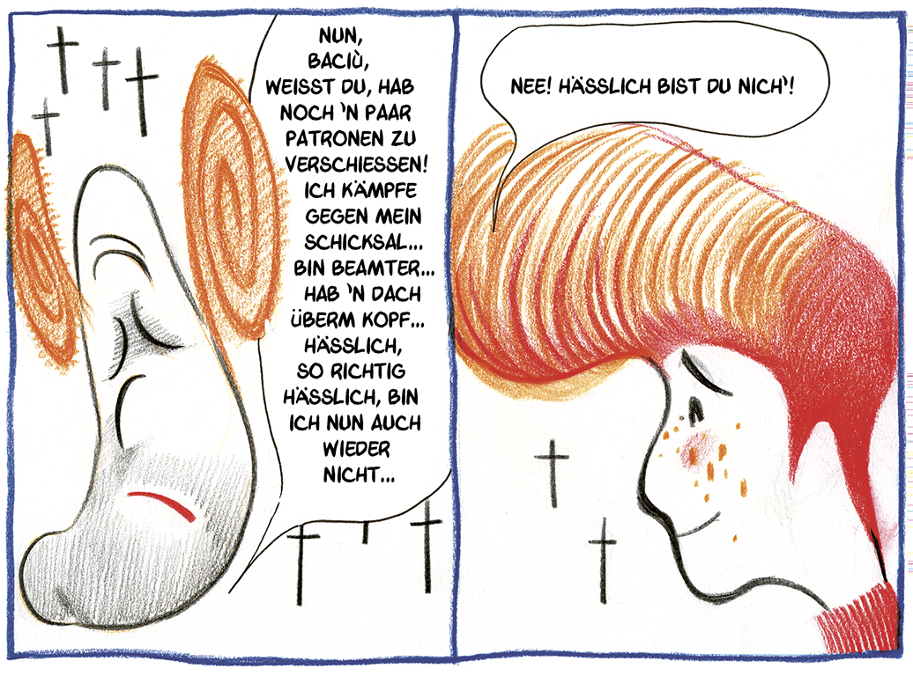

ÜBER DAS BUCH
INTERVIEW MIT PASOLINI entsteht 2002 aus der Hand von Davide Toffolo für den kleinen friulanischen Verleger Coconino Press und ist eine der ersten italienischen Graphic Novels sowie vielleicht die bekannteste italienische Bildergeschichte zu dem Dichter, Schriftsteller und Regisseur Pier Paolo Pasolini, einem der intelligentesten, vielseitigsten und widersprüchlichsten Intellektuellen des 20. Jahrhunderts. 2022 wird INTERVIEW MIT PASOLINI von Rizzoli Lizard noch einmal veröffentlicht und in mehrere Sprachen übersetzt. Erstmals liegt mit diesem Buch eine Übersetzung ins Deutsche vor.
Protagonist der Graphic Novel ist ein Alter Ego des Autors: Ein gezeichneter Davide Toffolo, der mit Kamera, Stativ und Notizblock sich auf den Weg zu einem Termin mit einem Mann macht, der behauptet, Pier Paolo Pasolini zu sein und mit ihm sprechen möchte.
Pier Paolo Pasolini wurde 1975 ermordet. In dieser Graphic Novel tritt er auf, als ob er am Leben wäre. Er sieht aus wie Pasolini, er spricht wie Pasolini. Handelt es sich um ein Gespenst? Um einen Mythomanen?
Der gezeichnete Toffolo setzt auf dieser Reise seine ganze Person ins Spiel und geht mehr und mehr auf ihn ein. Er reist zu den wichtigsten Lebens- und Wirkungsorten des Dichters – vom Friaul über Bologna nach Rom und Sizilien bis nach Afrika – um mit diesem imaginierten und imaginären Pasolini zu sprechen: ein Geist aus Fleisch und Blut, der ihn wirkungsmächtig und mitreißend als Mensch und als Künstler beeindruckt, rührt, erschüttert und prägt. In einer Reihe von Begegnungen mit »Signor Pasolini« schafft Davide Toffolo die Essenz des Dichters einzufangen, nimmt die Radikalität seiner Poetik in sich auf und überträgt sie zeichnend in seine Zeit.
»Jede Begegnung entspricht einer rituellen Initiation. Und so verändert sich schrittweise die Struktur der Erzählung. Einer aszendenten Linie folgend wird sie immer visionärer, Pasolinis Körper entmaterialisiert, ja zergliedert sich, wird von einer Reihe symbolischer Tiere verschluckt, verwandelt sich in einen Hund und in ein Krokodil (zwei in seinen Dichtungen verbreitete Figuren), spricht über die Welt als ein menschliches und gleichzeitig nicht mehr menschliches Wesen: so entsteht ein ununterbrochener Fluß an Energien und Worten, der von Pasolini zu seinem jungen Interviewer und Zeichner fließt« , schreibt Marco Antonio Bazzocchi in seinem aufschlussreichen Nachwort.
Bereits in den ersten zwei Interviews, als Signor Pasolini von seinen Anfängen als Schriftsteller und Regisseur erzählt, erkundet Toffolo die Welt seiner grundlegenden Ideen und setzt Pasolinis eigene Worte, seine Überlegungen zur Gesellschaft, Politik, Kunst, Homosexualität und Geschichte zu einem vielschichtigem Portrait zusammen. So hallen durch diese Graphic Novel viele der Themen und der Symbole aus dem literarischen Universum Pasolinis in die Gegenwart nach und stellen die heutige Gesellschaft mit ihrer neoliberalen Mentalität infrage.
Die anthropologische Revolution, den Hass für die Bourgeoisie, die Liebe für die Menschen der subalternen Klassen und Kulturen (die Bauern, die Subproletarier, die Bevölkerung Afrikas ...), die Anklage gegen die Gleichschaltung durch die Konsumgesellschaft, deren Opfer vor allem die Jugendlichen sind, Begriffe wie »totaler Ungehorsam«, wie »technokratischer Faschismus«, der mehr als der alte Faschismus jede kulturelle Differenz zerstört hat, sind nur einige der Themen, die in dieser Graphic Novel gekonnt in eine fließenden Bildererzählung integriert werden.
Mit dem Fortschreiten der Geschichte wird Signor Pasolini mehr und mehr zum Mythos, zum leitenden Geist, zur messianischen Figur, die den Autor zu einer Erneuerung seines Selbst führt in einer Art Identifikationsspiel, das sein Höhepunkt in der Übergabe des Storyboards von »La terra vista dalla luna« findet, den PPP als Comic gezeichnet hatte und Toffolo hier reproduziert.
Aber wenn auch hier eine Identifizierung der zwei Künstler stattfindet – nach dem Motto: Wer sich lange genug mit Pasolini beschäftigt, wird selbst zu Pasolini, ist auch wahr, dass »Lehrer dazu da [sind], dass man sie mit scharfer Soße verzehrt. Man muss sie verzehren und überwinden.«
»Sicher ist Pasolini einer meiner Lehrer, aber wie ich auch in meiner Performance schreibe: “Lehrer gehören verspeist”, also bleibt da am Ende wenig.« ~Davide Toffolo